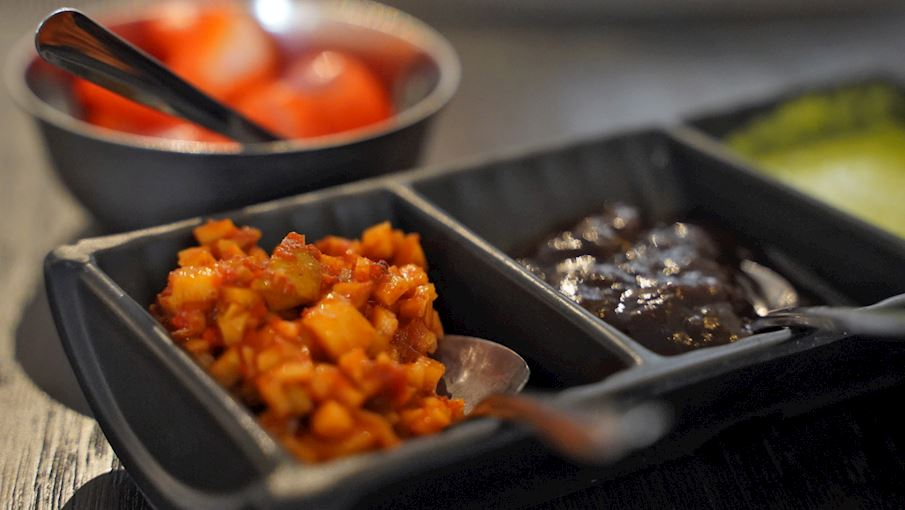

- firstly, heat 3 tsp oil and add 1 tbsp urad dal, 1 tbsp chana dal and 4 dried red chilli.
- saute on low flame until the lentils turn golden brown.
- now add ½ onion, 1 inch ginger and 2 clove garlic. saute until onions shrink slightly.
- further, add 1½ cup tomato and saute until the tomatoes soften.
- cool completely, and transfer to the mixi.
- add small ball sized tamarind, ½ tsp salt and ½ cup water.
- blend to a smooth paste.
- transfer the chutney to a large bowl and water as required adjusting the consistency.
- pour the tempering over the chutney and mix well.
- finally, onion tomato chutney recipe is ready to enjoy with idli, dosa and vada.

Ingredients
Qty
Oil
2 Tablespoon
Urad dal
1 Tablespoon
Chana Dal
1 Tablespoon
Red Chilli
4
Coconut
1 Cup
Tamarind
1
Jaggery
1 Tablespoon
Salt
1/2 Tablespoon